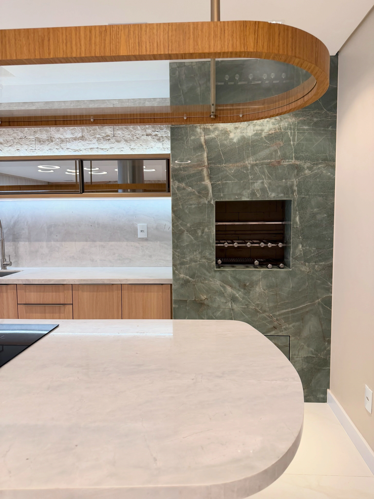
Marmoraria de alto padrão · Tubarão – SC
Da chapa bruta à peça sob medida.
Granito, mármore, quartzo, quartzito e ultracompacto cortados e acabados para cozinhas, lavabos, banheiros e mesas, do recorte reto às formas esculpidas.
Materiais
Cinco famílias de pedra
Cada material tem origem, desenho e comportamento próprios. Conhecer as diferenças ajuda a escolher a pedra certa para cada ambiente; a orientação final vem do comercial, a partir do seu projeto.
-
Rocha natural formada pelo resfriamento lento do magma. Tem aparência granulada, com pontos de cor espalhados, e costuma ser escolhida pela dureza e pela boa convivência com o uso diário.
Usos comunsBancadas de cozinha, áreas gourmet e externas, soleiras e escadas.
Perguntar sobre granito -
Rocha natural de veios marcantes e presença elegante. É mais sensível a ácidos, manchas e riscos que o granito, por isso pede uma escolha consciente do ambiente e cuidado na manutenção.
Usos comunsLavabos, painéis, mesas e peças de destaque.
Perguntar sobre mármore -
Superfície produzida a partir de quartzo moído e resinas. Oferece cor mais uniforme e padrões previsíveis, com baixa porosidade, o que facilita a limpeza no dia a dia.
Usos comunsBancadas de cozinha e banheiro, ilhas e áreas de uso intenso.
Perguntar sobre quartzo -
Rocha natural formada a partir do arenito. Lembra o mármore no desenho dos veios, mas em geral é mais dura e resistente, unindo presença visual e desempenho.
Usos comunsIlhas, bancadas, lavabos esculpidos e revestimentos.
Perguntar sobre quartzito -
Superfície de grandes formatos e pouca espessura, produzida sob alta pressão e temperatura. Permite peças contínuas, com poucas emendas, e resiste bem a calor, manchas e riscos.
Usos comunsBancadas, revestimentos de parede e piso, ilhas e mobiliário.
Perguntar sobre ultracompacto
PDF público no Google Drive, com as pedras trabalhadas pela marmoraria.
Projetos
Peças por ambiente
Uma seleção de trabalhos publicados no perfil da Top Marmoraria: cozinhas, lavabos, banheiros, mesas e detalhes.
Fotos do perfil @top.marmoraria. Créditos de projeto a confirmar.
01Cozinhas
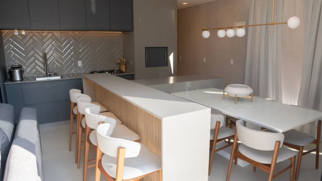
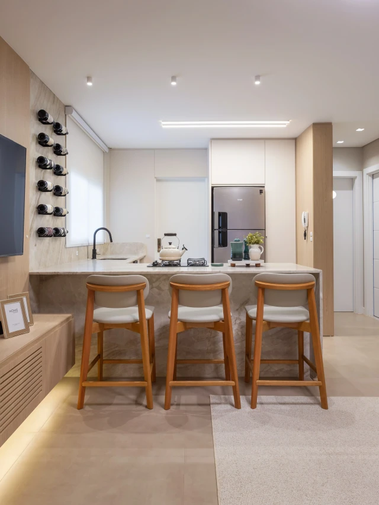
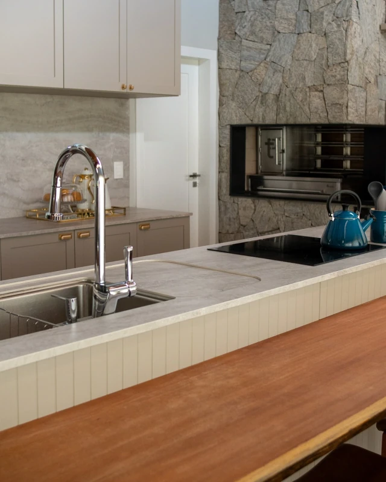
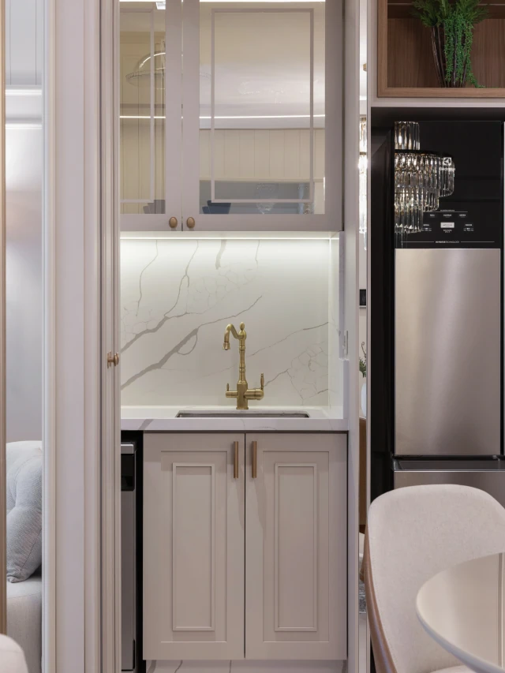
02Lavabos
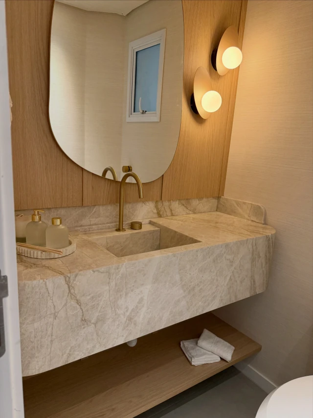
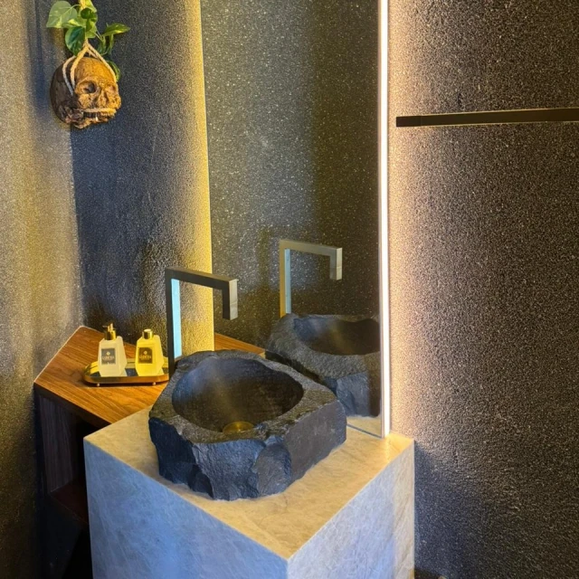
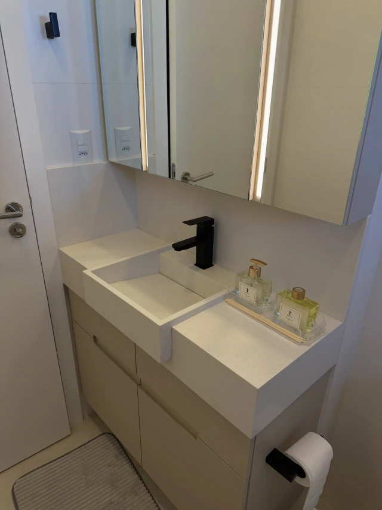
03Banheiros
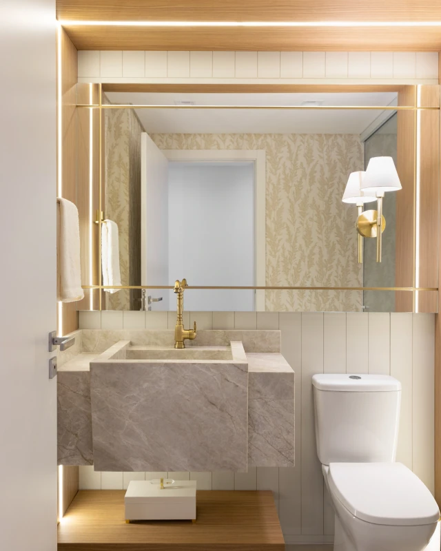
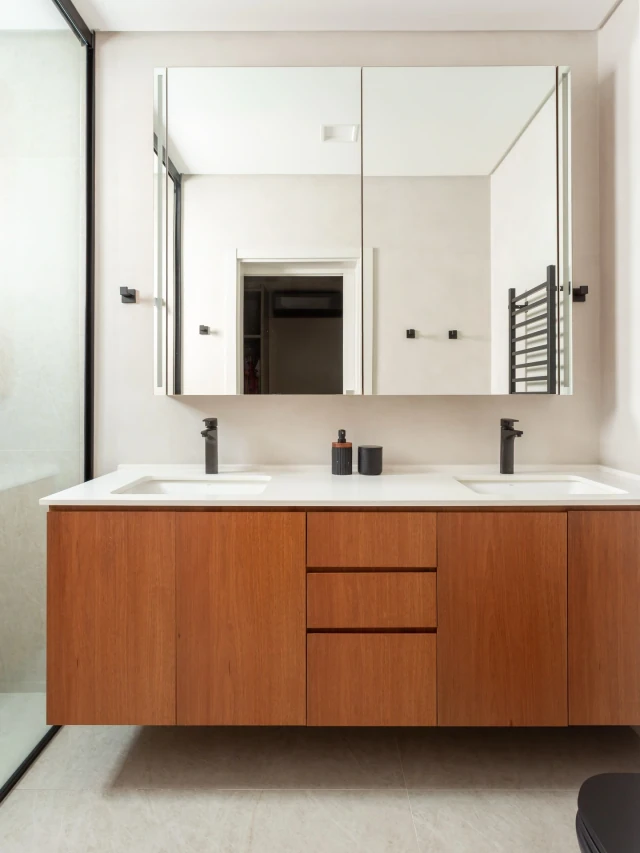
04Mesas & detalhes
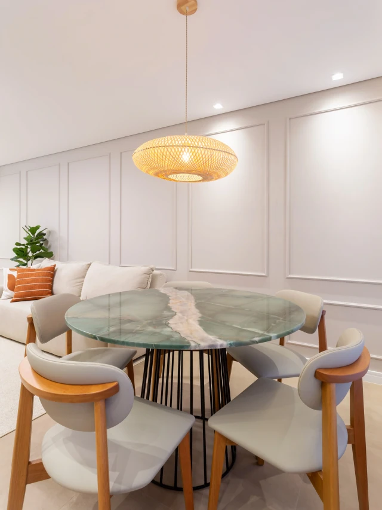
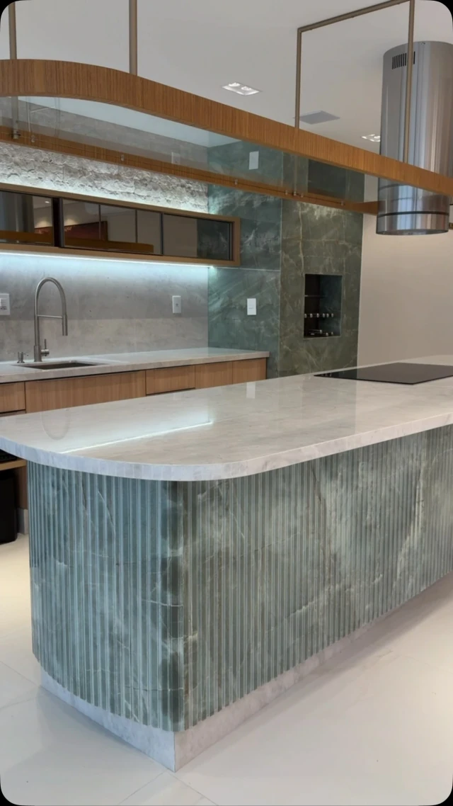
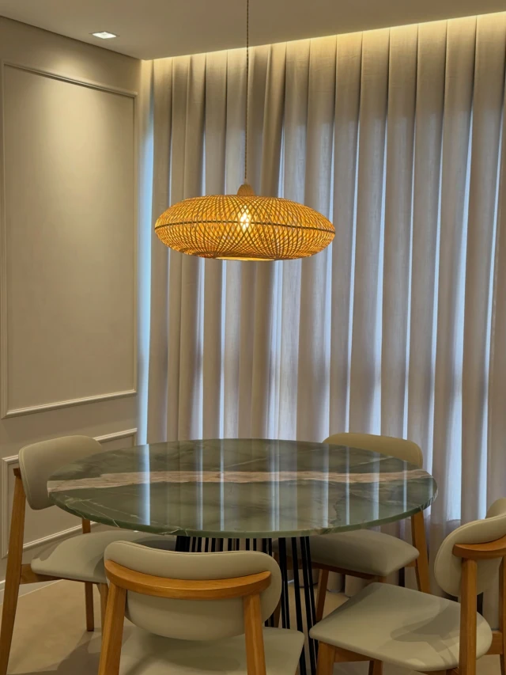
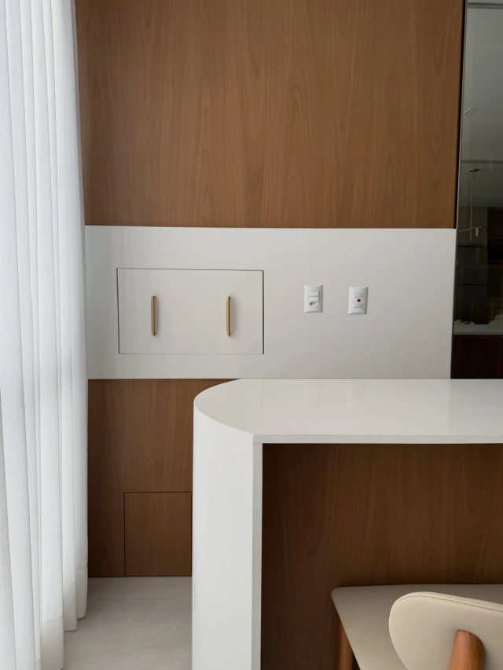
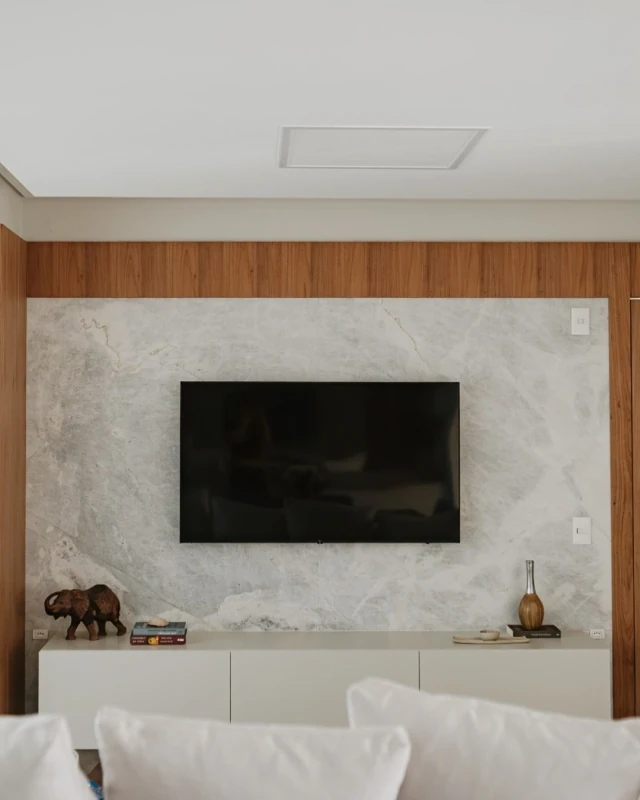
Quer ver mais?
Destaques Projetos, Produção e Feedback no InstagramComo funciona
Do primeiro traço à instalação
Etapas gerais. O caminho de cada obra é combinado com o comercial.
- 01
Conversa e projeto
Você conta o que imagina ou envia o projeto do seu arquiteto. O ponto de partida é entender o ambiente, o uso e o acabamento desejado.
- 02
Escolha da chapa
A pedra é escolhida pela cor, pelo desenho dos veios e pelo uso que vai ter. Cada chapa natural é única.
- 03
Medição
As medidas são conferidas no local, para que a peça se ajuste ao ambiente real.
- 04
Corte e acabamento
A chapa é cortada e recebe o acabamento definido: bordas, cubas, curvas ou ripados.
- 05
Instalação
A peça chega ao ambiente e é instalada no lugar para o qual foi desenhada.
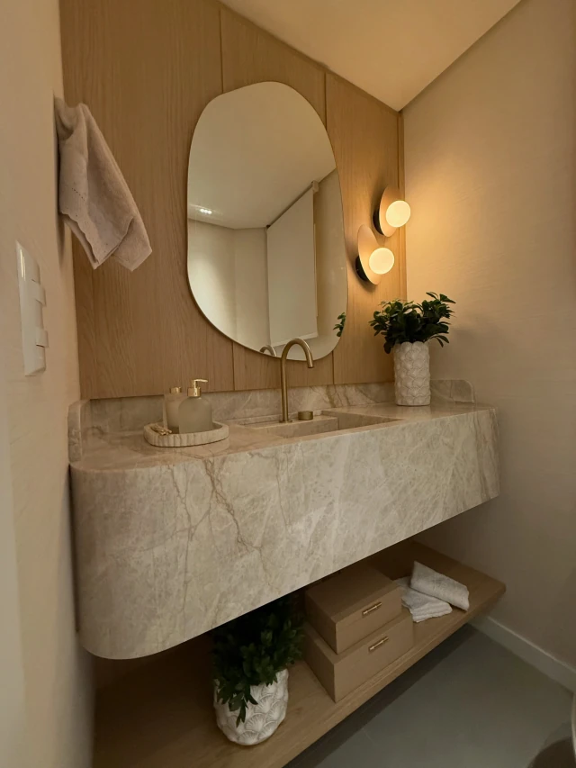
Para arquitetos e designers
Seu desenho, executado em pedra.
Lavabos esculpidos, bancadas curvas, pedra ripada: detalhes que dependem de corte e acabamento cuidadosos. Se você especifica pedra nos seus projetos, fale com o comercial para conhecer o catálogo e alinhar a execução.
Falar com o comercialEmpresa associada ao Clube Sala.
Contato